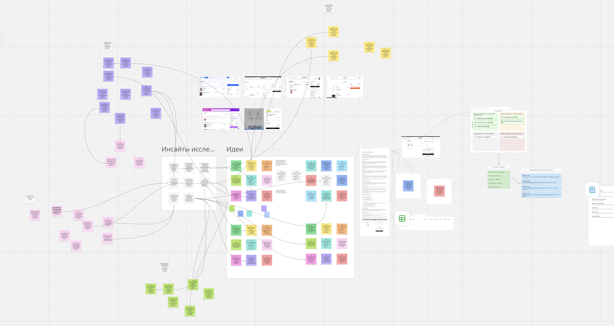
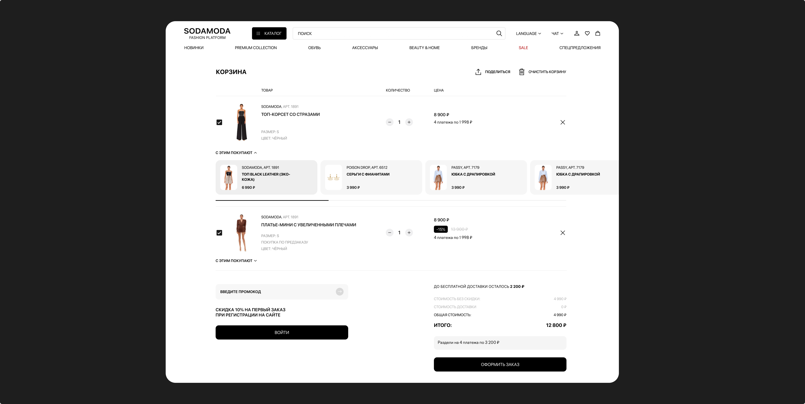

If we show progress toward free shipping directly in the cart, it will be easier for users to decide to buy, increasing CR.

Redesigned the cart UX based on research, a UX audit, and competitor analysis, and increased cart-to-purchase conversion by 14%.
While analyzing product analytics, I noticed that a significant share of users add items to the cart but don't complete the purchase.
According to Baymard Institute research, on average 70.19% of e-commerce carts are abandoned. Researchers also note that by improving cart and checkout UX, large online stores can increase conversion by an average of 35.26%, since much of the loss happens specifically because of user experience issues.
Analytics showed that users reach the cart but don't take the next step — checkout. This made me wonder why they stop exactly at this stage.
How do you help users who have already shown interest in a product decide to buy it?
I hypothesized that users treat the cart not only as a way to check out, but also as a place to save items. At the same time, the current interface wasn't helping them overcome hesitation and complete the purchase.
To test this hypothesis, I conducted research.

Before designing solutions, I studied e-commerce best practices and industry research, and analyzed competitors' carts.

The existing cart lacked information about free shipping and the amount needed to qualify for it.
According to Baymard Institute, users decide to buy with more confidence when they see the free-shipping terms directly in the cart. This reduces uncertainty during checkout and can help drive CR growth.
Users get a 10% discount on their first order after registering, but this wasn't indicated anywhere in the cart. As a result, some users checked out without registering and missed out on the available discount.
HubSpot Research: a signup incentive increases purchase conversion by up to 18%.
Users don't always complete a purchase on their first visit. Automated email and SMS reminders about items left in the cart help bring them back into the checkout flow and increase conversion.
Klaviyo research shows that automated abandoned-cart reminder flows are one of the most effective tools for bringing users back and increasing completed purchases.
Sodamoda operates in the premium segment, where the average order value is significantly higher than the mass market. For such purchases, the option to pay in installments helps lower the psychological barrier and makes expensive items more accessible without reducing their perceived value.
Buy Now, Pay Later (BNPL) market research shows that the option to pay in installments increases conversion, raises average order value, and reduces cart abandonment, especially for higher-priced items.
Users didn't see that the size they needed was running out.
According to the scarcity effect, limited availability of a product increases the likelihood of a purchase decision.
After finishing the research, I ran a brainstorm with the team. Based on the insights we gathered, we formed and prioritized hypotheses that became the foundation for the solutions that followed.

Hypotheses that came out of the brainstorm
If we show progress toward free shipping directly in the cart, it will be easier for users to decide to buy, increasing CR.
If we show the benefit of registering (a 10% discount on the first order) directly in the cart, more users will complete checkout, increasing CR.
If we show the option to pay in installments directly in the cart along with detailed payment terms, it will be easier for users to decide to buy, increasing CR.
If we show in the cart that the size a user needs is running out, users will decide to buy faster, increasing CR.
If we let users move items from the cart to favorites, they'll be able to save items they're interested in without using the cart as a wishlist, making the purchase flow more convenient and increasing CR.
If we let users change an item's size or color directly in the cart, they won't need to go back to the product page, reducing abandoned purchase flows and increasing CR.
Users couldn't see how much more they needed to spend to reach free shipping, so they had no incentive to increase their order value.
Added a progress bar showing the amount remaining to reach free shipping, motivating users to increase their order value.

Users didn't know about the first-order discount and saw no reason to register. As a result, the company couldn't use email and SMS reminders to bring back users with abandoned carts.
Added a block in the cart with a 10% first-order discount to motivate users to sign in before checkout.
This not only increases the number of registered users but also enables email and SMS reminders to bring back users with abandoned carts.

Because of the high average order value, users didn't see the option to pay in installments before checkout, which raised the price barrier to purchase.
Added installment payment information to the cart and next to the item price, to lower the perceived price barrier even before checkout.

Users didn't see that their chosen size was running out, so they weren't in a hurry to complete the purchase.
Added a "Low stock" and "last size available" badge to the item in the cart when the needed size is running low, creating a sense of scarcity and speeding up the purchase decision.


I can see free shipping is a thing, but I don't understand how close I am to it. If it was just a little more, I'd probably add something else.
Insight: users lacked visibility into their progress toward free shipping.
I noticed there's an installment option, but I don't understand how it works. I'd like to see the terms without leaving this page.
Insight: users lacked information about installment payment terms.
I only just noticed that registering gets you a discount. If I'd seen that right away, I probably would have registered first.
Insight: the registration benefit wasn't visible enough.
Turns out this is the last size available. If I'd seen that right away, I probably wouldn't have taken so long to decide.
Insight: users noticed limited availability information too late.
These insights shaped the final version of the interface, which was then handed off for validation in an A/B test.

Primary metric: cart-to-checkout conversion.
Tested the impact of:
| Metric | Control | Experiment | Change |
|---|---|---|---|
| Cart-to-checkout conversion | 32.0% | 36.5% | +4.5 pp (+14%) |
The experiment was run on real traffic.
The redesigned cart stopped working like a plain list of items and became part of the path to purchase — it holds attention, surfaces benefits, and helps users decide.

The cart isn't a dead end — it's part of the journey. Showing benefits and progress right there makes users more willing to reach checkout.
Hypotheses first, pixels second. Prioritizing on an impact/effort matrix helped us invest in solutions with the highest impact for the lowest effort.
Numbers beat opinions. The final decisions were validated not by taste, but by a UX test and an A/B test on real traffic.
Interested in working together — just write to me and we'll discuss the project.
Contact me